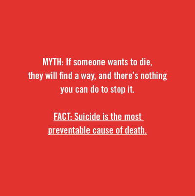
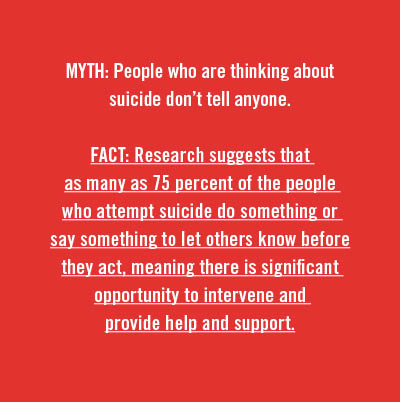
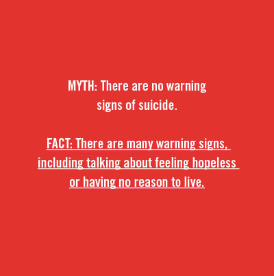
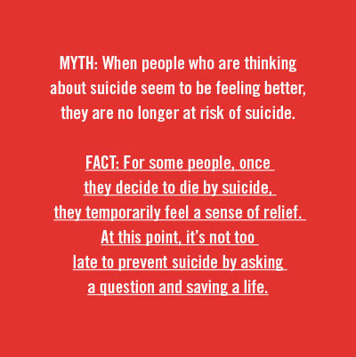
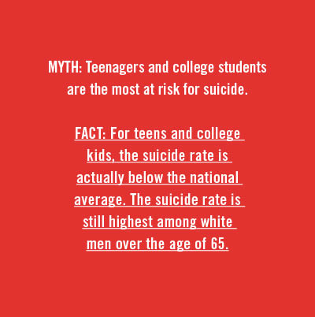

A preventable crisis
Mental health professionals tackle Oklahoma’s rising suicide rate

Joseph Rushmore
In the U.S., more people die by suicide than in car accidents, according to the Centers for Disease Control and Prevention. Suicide has risen by 37 percent in Oklahoma since 1999—the eighth-highest rate in the nation. Despite this disturbing trend, $52.6 million has been cut from the Oklahoma Department of Mental Health and Substance Abuse Services over the past four years.
As a social worker in Oklahoma, I have witnessed firsthand the effects of Medicaid being cut from families that no longer meet income requirements, despite living in poverty. I have seen kids slip through the cracks of our mental health and school systems until their maladaptive behaviors and symptoms intensify to the point of needing inpatient services. Each year, 700,000 to 900,000 Oklahomans are identified as needing treatment for mental illness or substance abuse, yet only one-in-three of those identified are able to access it.
Last October, my friend and fellow social worker died by suicide. She was a tireless social justice advocate, fiercely devoted to the people she served. Her passion and dry sense of humor will stay with me forever.
Two months after her death, my good friend Chris Silberstein lost his mother to suicide. I asked Chris if he’d be willing to answer a couple of questions for this article. He was hesitant because, like many relatives and friends of people who have died by suicide, he experiences the stigma surrounding it.
Still, he recognizes the importance of dragging this difficult discussion out of the darkness and into the light. “It’s really sad and awful to talk about; however, I think we’d all be better off, and even happier, if we could ease up on the pressure to always appear like everything is fine.”
Prevention and outreach: Question, persuade, refer (QPR)
Despite reduced government funding, many local organizations within Oklahoma have worked to address our increasing suicide rate. Julie Summers, Director of Outreach and Prevention with Mental Health Association Tulsa (MHAT), shared information about the services provided in her department.
MHAT helps connect people with resources to navigate the mental health system with a focus on prevention, education and intervention. One of the organization’s training programs is known as QPR (Question, Persuade and Refer). “[It’s like the] CPR of mental health [because] it teaches you how to be the help until help comes,” Summers said.
QPR trains people to recognize the warning signs of a suicide crisis and how to question, persuade, and refer someone to get the help they need. It’s a one-hour, evidence-based training program that is available free of charge. “We tend to do it in groups like church groups, civic groups, [and] employee groups. Just this week we hit 1,500 for the year, people that we’ve trained in QPR. We go across the city and across the state,” Summers said.
Emily Brandenburg, a board member of the Mental Health Association Tulsa, shared how her training in QPR has impacted her. “I’ve attended more than half a dozen trainings, and the relevancy is renewed each time. It was after that first training where I realized, though, that this was not my first exposure to QPR.”
That first exposure came when her sister experienced suicidal feelings in high school, and a teacher responded with the strategies that would become central to Brandenburg’s own prevention training. “The steps that teacher took next were a variation of QPR that ultimately led to my sister receiving the treatment and help she needed. Knowing that this teacher really only acted on her own intuition made me realize in the moments immediately following my first QPR training how really important an expertly crafted action plan was. QPR takes those little tickling feelings and teaches you what to do with them.”
If you are interested in scheduling QPR training for your business, school, faith community, or civic organization, call 918-585-1213 or 405-943-3700.
Risk factors
Experts have been unable to pinpoint a single determining cause of the rising rate of suicide. They are complex and vary across culture, race, sexual orientation, age groups, and gender. Risk factors for suicide are also multifaceted and range from biopsychosocial factors such as mental illness, substance abuse disorders, history of trauma or abuse, previous attempts, or major physical illnesses.
Social and cultural risk factors can include lack of support, lack of access to health and mental health care, and stigma associated with seeking help. Environmental risk factors can include job loss, loss of a loved one, or easy access to lethal means.
“When we talk about limiting access to lethal means we’re not saying people who own guns are more likely to be suicidal. We are saying that if someone is suicidal and they have access to a gun, they are in far more danger than if they don’t,” Summers said. “Limiting access to lethal means is another big way of addressing the suicide issue. So, storing guns separately from ammunition, putting locks on guns that kids can’t access or people who are suicidal can’t access.”
No one is immune to mental health issues, but various at-risk groups do complete suicide at a higher rate. These include but are not limited to: Native Americans and Alaska Natives, the LGBTQ+ population, middle-aged men, veterans, and service men and women.
At-risk: the transgender community
Transgender people are 22 times more likely than the general population to complete suicide. A study from the flagship journal of the American Academy of Pediatrics, found that 51 percent of transgender male adolescents and 30 percent of transgender female adolescents attempted suicide before the age of 18.
A study in LGBT Health found that transgender individuals who have experienced family rejection are at a higher risk for substance abuse and suicidality. Another study, published in the Journal of Homosexuality, found a higher rate of suicide attempts in participants who had been denied access to a public restroom. The Dennis R. Neill Equality Center in Tulsa offers several support groups for transgender and intersex adolescents, adults, and groups for family members.
In October, the Trump Administration announced they were considering putting forth new policies that would legally define a person’s gender based on their biological sex at birth, a decision many consider to effectively erase transgender identity. Since the announcement, Trans Lifeline, a crisis hotline for transgender people, has seen four times the number of calls to their suicide hotline.
Trans Lifeline: 877-565-8860
At-risk: Veterans
Oklahoma’s veterans die by suicide at a rate higher than the national average, according to a report released by the U.S. Department of Veteran Affairs. In 2014, 149 veterans died by suicide at a rate of 53.8 veteran suicides per 100,000 veterans. In 2015, the number rose to 159. The national rate of veteran suicides is 38.4 per 100,000 veterans.
Oklahoma veterans ages 18-34 currently have the highest rate of suicide in the nation. Advocates and professionals believe many factors contribute to this climbing rate, such as lack of access to mental health services, substance abuse issues, access to firearms, and the difficult transition from military to
civilian life.
Professionals say that the first year back from service is the most difficult for veterans. Veterans encounter an array of challenges after discharge such as a loss of community and feelings of isolation, difficulty finding jobs, trauma from sexual abuse while serving as well as trauma from combat often resulting in post-traumatic stress disorder.
The Tulsa Vet Center is open to any veteran who served in a combat zone or experienced sexual trauma while on active duty. The center offers individual and group counseling services to veterans and families who have lost a loved one. They also have a 24/7 crisis line: (918) 628-2760.
At-risk: Indigenous populations
 Native American and Alaska Natives have the highest rate of completed suicide compared to any other ethnic group in the U.S. This increasing rate is especially prevalent in Native youth. With more than 573 federally recognized tribes and over 300 languages spoken, the issue of suicidality within the Native population is complex with each community presenting with unique issues and concerns.
Native American and Alaska Natives have the highest rate of completed suicide compared to any other ethnic group in the U.S. This increasing rate is especially prevalent in Native youth. With more than 573 federally recognized tribes and over 300 languages spoken, the issue of suicidality within the Native population is complex with each community presenting with unique issues and concerns.
In 2016, the Osage Nation Prevention Program (ONPP) received a grant to address the high rate of youth suicide in Osage County. For ages 15-24 from 2004-2013 the rate was 42.7 percent higher than the state average.
Nearly a quarter of the Native population in Osage County is younger than 25. Therefore, emphasis has been placed on early interventions and positive youth development programming with Native youth to reduce risk for suicide and substance abuse.
“The [ONPP] community outreach efforts have a strong impact,” said Harmony Revard Fuller, a therapist with the Osage Nation in Pawhuska. “They are present at community events and in the school systems, making sure that individuals are educated on the resources at their disposal. Osage Nation Prevention collaborates with other organizations in an effort to bridge gaps and collect data so we as a Nation can better serve our people.”
Revard discussed the benefits of the tribe providing a wide range of resources within Pawhuska, but pointed out that many rural towns in Osage County continue to lack resources. For one, residents often struggle financially and experience barriers to transportation.
“Even when individuals are willing to seek help, location of services can pose a real threat to that person's ability to connect with behavioral health supports. In more populated Osage County communities, we see better access,” Revard said. “There are many small towns and communities outside of Pawhuska that do not have this sort of programming, so families are left to make tough decisions about whether or not they are able to travel for their behavioral health needs.”
Cultural competency and suicide prevention
Revard shared that she sees a great need for culturally competent professionals within the field, especially when those professionals are working with a culture, race, or ethnicity different from their own. Lack of competence can result in poor quality of care and alienation from mental health services.
“It is so important to have cross-cultural knowledge,” Revard said. “Oklahoma is home to 39 tribal nations. As mental health providers, we should make an effort to know our clients in a cultural sense, especially if that can be a pathway to healing.
Making assumptions about someone’s culture or lumping all tribes into one generic category can create unintentional harm. … Mental health providers [should] step outside of their comfort-zone and make space for the incorporation of traditional healing. Tradition is healing, and there is resiliency and power in that.”
“More than her last day”
“It’s a difficult subject to be public about,” my friend Chris Silberstein said, when asked about his mom’s death. “On the one hand, there’s the very real stigmas that exist about mental health issues. And on the other … I really don’t want the first thing people think when they hear my name is, ‘Oh yeah, his mother committed suicide,’ which is a big part of why people are so private about [it].
“The truth is we’re not all thriving all the time,” he continued. “And we need to be more open about that so that people that need help feel a little less worried about how they’ll be perceived for needing some help. And, for those of us who have experienced suicide firsthand, I think it’s really important we remind ourselves that we’re not defined solely by this tragic thing that happened, and neither should our departed loved ones. My mother lived 49 years before she left this planet. I think we owe it to her to remember her by more than her last day here.”
Warning signs of suicide
- Talking about wanting to die or kill themselves
- Looking for a way to kill themselves, such as searching online or buying a gun
- Talking about feeling hopeless or having no reason to live
- Talking about feeling trapped or in unbearable pain
- Talking about being a burden to others
- Increasing the use of alcohol or drugs
- Acting anxious or agitated; behaving recklessly
- Sleeping too little or too much
- Withdrawing or isolating themselves
- Showing rage or talking about seeking revenge
- Displaying extreme mood swings
If you need help, call the National Suicide Prevention Hotline at 1-800-273-TALK (8255).
Veterans may press 1 to be directed to the Veteran Crisis Line.
National Crisis Text Line: Text “Help” to 741741
COPES is a 24-7 free mobile crisis program serving adults and children in psychiatric crisis. If you or someone that you know is in crisis, you can contact COPES at (918) 744-4800.
.jpg)
.jpg)